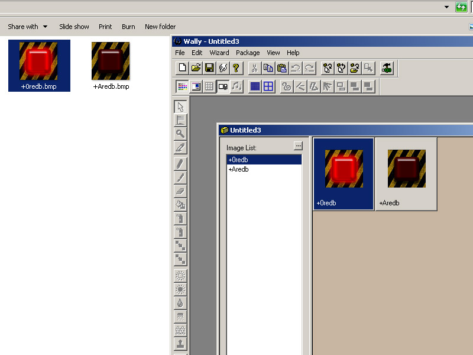
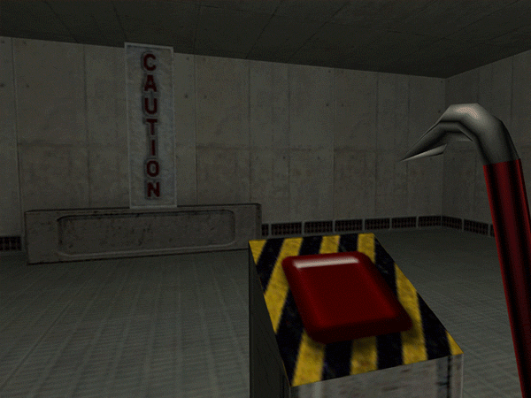
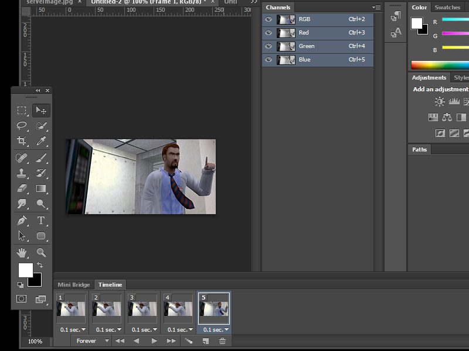
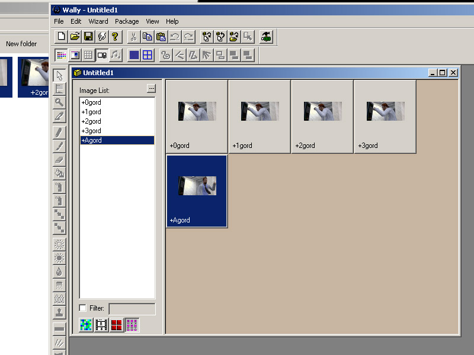
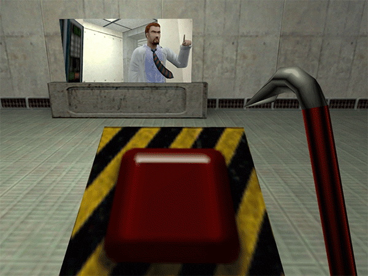
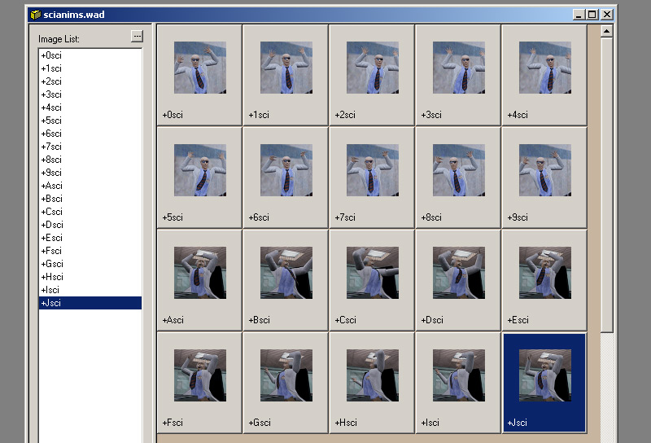
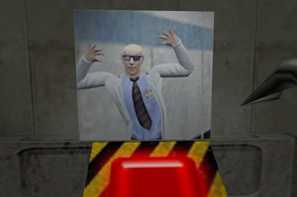

1) To create a toggleable animated texture or just a simple button toggle create a texture that is a static unanimated state and add "+A". Now if you want the second state to be animated then use names like "+B","+C" all the way to "+J" (10 frames maximum just like +0 to +9). Remember to have the same filenames so it is linked to the other textures. Here I will create 2, a simple on-off switch and a toggle animate switch that pulses when on.
Save your texture out as you would in Part1, only name the off state as "+Aredb.bmp" and the on state as "+0redb.bmp". Add the textures to your wad and add to hammer as usual:

3) Now apply your +A texture to a func_button entity. When the button entity is pressed it will change the state to the on texture. By default the button resets itself and then returns to the original state after a few seconds. Go to "flags" on the func_button entity and set it to "toggle" if you want. This way it will stay in an ON or OFF state.
A thing to know is that any brush entity that has a togglable texture changes its state when the entity is triggered. Here I have a func_wall brush entity that has another toggle texture (caution texture name "+A~LAB1_CAU") and a light both with the name "red". The func_button has a target of "red" so when pushed it activates the light and activates the func_wall texture state as observed here:

4) Next I will create a toggled Animated texture. Prepare an animated texture in the exact same way as in Part4, but this time the final image will be renamed to the OFF state as "+Agord.bmp". Add the images as usual to a wad and place the texture in hammer.


5)This time I have a func_wall with the "+Agord.bmp" texture added to it and the button is targeting it so it will set it to the animated looping state, then deactivate on pressed again since I have the button to toggled state. Without toggled flag, the button will reset itself after a set amount of seconds. If we want it reversed, then texture the func_wall with the "+0gord.bmp" so it begins in the animated state.
Observe in action. This technique is most notable in the eyescanners at the beginning of half-life.

6)For a dual animated sequence using the letters further than +A I have this example here showing the two ten frame sequences. I had to manually rename the letter ones because irfanview's batch rename can only increment with numbers.

7)Observe the final button toggled animation sequences
